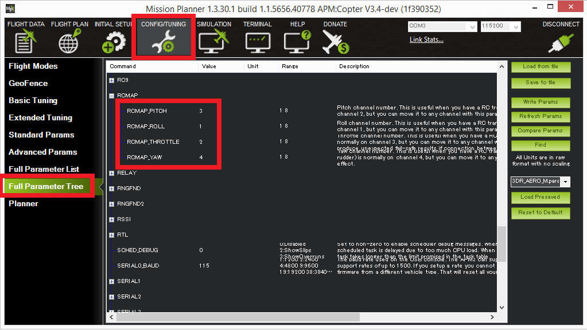

RC Input Channel Mapping (RCMAP)¶
This article shows how to set up a non-standard RC input channel mapping using the RCMAP feature.
配置¶
By default the RC input channels are:
Channel 1: Roll input
Channel 2: Pitch input
Channel 3: Throttle input
Channel 4: Yaw input
These can be changed by setting the RCMAP_ROLL, RCMAP_PITCH, RCMAP_THROTTLE and RCMAP_YAW parameters using the Mission Planner’s Config/Tuning | Full Parameter Tree (or Full Parameter List) as shown below.
{kind=link}
After changing any of these parameters the autopilot should be rebooted.
[site wiki=”copter”] For multicopters, the RC calibration and ESC calibration should be re-done. [/site]
Additional information about the RCMAP parameters can be found for the respective platforms in:
Copter Parameters, Plane Parameters
and Rover Parameters.
[site wiki=”rover”] Rover notes ===========
As a real example, if your aileron (steering) is on channel 1 and your elevator (throttle) is on channel 2, then the settings should be:
RCMAP_ROLL=1RCMAP_THROTTLE=2
RCMAP_PITCH and RCMAP_YAW can be whatever channels you want to
make them as long as they are not channels 1 and 2.
For Rover you should also select the receiver channel that will be used to control the Mode select (MODE_CH).
[/site]